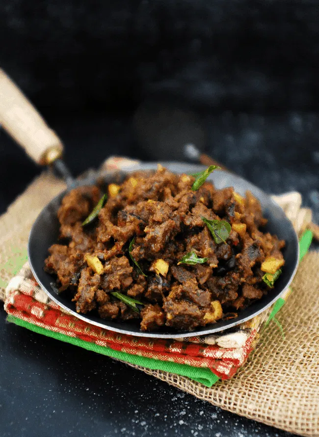

Beef Fry

Description
Spicy beef fry or beef roast is a traditional dish from the South Indian state of Kerala. Cubed meat is cooked with spices till tender and roasted in a mix of onions, spices, and herbs till each morsel gets a caramelized coating of the spice mix. This dish is usually served with flatbreads and a great way to share a drink or two with friends.
Ingredients
- 1 kg Beef / Mutton cut into bite size pieces
- 2 tsp Fennel seeds
- 1 tsp Whole black pepper
- 4 Cardamom
- 4 Cloves
- 2 small - med sticks Cinnamon
- 2 petals from 1 Star anise
- a pinch Cumin
- 3 medium Onion sliced
- 2 tbsp Chopped ginger & garlic each
- 4-5 Green chilli slit lengthwise
- 1/2 cup Coconut bits (thengakothu)
- 1/2 tsp Turmeric powder
- 3 tsp +1 tsp Coriander powder
- 15-20 Small / pearl onion sliced
- Curry leaves
- Salt
- Coconut Oil
Steps
- Dry roast fennel seeds, whole black pepper, cardamom, cloves, cinnamon, cumin and star anise for 3-4 mins or till the roasted aroma comes. Let it cool and grind to a fine powder, using grinder or in a mortar and pestle.
- Marinate cleaned beef with 2 tsp of ground spices, turmeric powder, coriander powder (3 tsp), onion, ginger, garlic, green chilli, coconut bits, salt and curry leaves. Add 1/2 cup water to this and pressure cook the beef till done (refer notes).
- Heat oil in a deep and wide pan. Add sliced small onion and curry leaves. Fry till the small onion becomes brown. Add 1/2 - 1 tsp of ground spices and 1 tsp of coriander powder. Fry for 2 mins. Add cooked beef along with the stock (cooking water).
- Bring it to boil, reduce flame to lowest. Cover and cook for 7 - 10 mins. Remove the lid and continue to cook till the beef becomes darker in colour. It might take another 8 -10 mins. Add 1-2 tbsp of hot water in between to retain the moisture. You can also add oil in between. Cook till the beef is roasted nicely and is dark in colour. Please note that the colour deepens as it rests.
Notes
Pressure cooking the beef - Pressure cook with the weight on, in full flame till the first whistle comes. After the first whistle, reduce the flame to low-medium and cook for another 10-12 whistles. The cooking time may vary depending on the cut and type of beef you use. I normally use Indian beef and the notes are based on that.
Make sure you dont skimp on the small onion, since it adds more flavour to the dish. If you want to make it spicy, add 1 tsp of crushed red chillies & 1/4 - 1/2 tsp of crushed pepper , once the small onion browns and follow the rest of the recipe.
There might be left over of the ground spices. You can use that in other dishes, instead of your regular garam masala. However, I strongly recommend you to use freshly roasted and ground masala for making this particular dish.
Return Home